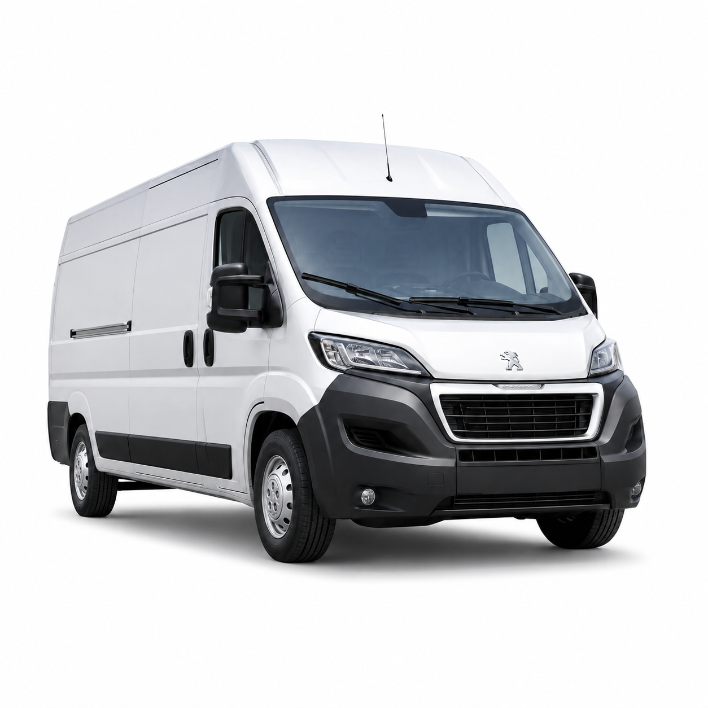
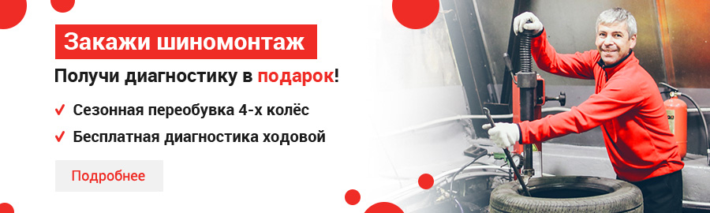

Ford Transit
Ремонт, ТО, диагностика и запчасти для Ford Transit.
AutoMD выполняет диагностику, ТО, ремонт и подбор запчастей для автомобилей Ford. Работаем с коммерческим транспортом, знаем особенности популярных моделей и помогаем быстро вернуть автомобиль в работу.
Выберите свою модель, чтобы посмотреть услуги, цены, типовые неисправности и варианты записи именно для вашего автомобиля.

Ремонт, ТО, диагностика и запчасти для Ford Transit.
Ремонт, ТО, диагностика и запчасти для Ford Transit Custom.
Ремонт, ТО, диагностика и запчасти для Ford Tourneo Custom.
Ремонт, ТО, диагностика и запчасти для Ford Ranger.
Ремонт, ТО, диагностика и запчасти для Ford Transit Connect.
Ремонт, ТО, диагностика и запчасти для Ford Tourneo Connect.
Ремонт, ТО, диагностика и запчасти для Ford Transit Courier.
Ремонт, ТО, диагностика и запчасти для Ford Tourneo Courier.
Ремонт, ТО, диагностика и запчасти для Ford Focus.
Ремонт, ТО, диагностика и запчасти для Ford Mondeo.
Ремонт, ТО, диагностика и запчасти для Ford Kuga.
Ремонт, ТО, диагностика и запчасти для Ford Explorer.
Укажите модель и задачу — мы покажем подходящие услуги и поможем записаться в техцентр


Проверим основные системы автомобиля и определим причину неисправности перед ремонтом.

Проводим плановое обслуживание автомобилей Ford по регламенту и состоянию автомобиля.

Ремонтируем основные узлы и системы автомобилей Ford после диагностики и согласования стоимости.

Подберем совместимые детали и выполним замену в техцентре.

Проверяем работу топливной системы, определяем причину неисправности и подбираем решение

Дополнительные сервисы для владельцев автомобилей Ford.
AutoMD помогает подобрать новые и б/у запчасти для автомобилей Ford. Детали можно купить через интернет-магазин или установить в техцентре после согласования с менеджером.
Стоимость зависит от состояния автомобиля, объема работ и выбранных запчастей. По типовым задачам можно заранее посмотреть ориентировочную цену, по сложным неисправностям точная стоимость определяется после диагностики.
Для популярных моделей многие детали есть в наличии — не нужно ждать поставку неделями
Большинство типовых работ выполняем в день обращения после диагностики и согласования
После ремонта объясняем, что было сделано, и фиксируем условия обслуживания.
Основной фокус — Fiat Ducato, Ford Transit, Citroen Jumper, Iveco Daily, Peugeot Boxer, Peugeot Partner, Citroen Berlingo, Sollers Atlant и JAC Sunray
Подбираем детали, согласовываем стоимость, выполняем ремонт и выдаем автомобиль с гарантией
Обслуживаем личные автомобили, коммерческий транспорт и автопарки компаний


В AutoMD с коммерческим транспортом на всех этапах, от звонка менеджеру до ремонта и выдачи автомобиля, работают специалисты своего дела.
Такой подход помогает быстрее находить причину проблемы, точнее подбирать запчасти и выполнять работы в срок.

Выполняют диагностику, ТО, ремонт и замену узлов. Знают особенности популярных моделей Ford.

Подбирают оригинальные, аналоговые и б/у детали по модели, VIN или артикулу.

Проверяют электронные системы, двигатель, ходовую, тормоза и электрику.

Фиксируют задачу, согласовывают работы и объясняют каждый этап ремонта.

Помогают выбрать техцентр и удобное время, уточнить стоимость и наличие запчастей.
AutoMD помогает компаниям быстро возвращать коммерческие автомобили в работу и контролировать расходы на обслуживание.

Да. Оставьте контакты — менеджер уточнит модель, год выпуска и подберёт подходящий техцентр.
Предварительную стоимость рассчитаем по модели и задаче. Точную цену подтвердим после диагностики.
Да, подберём совместимую деталь и согласуем установку в одном из техцентров AutoMD.
Многие детали для популярных моделей Ford есть на складе. Остальные закажем после проверки совместимости.
Да, обслуживаем отдельные автомобили и автопарки, предоставляем безналичную оплату и документы.
Гарантийные условия фиксируются в документах и зависят от выполненных работ и установленных деталей.
Можно, но предварительная запись поможет сократить ожидание и заранее проверить наличие запчастей.
Оставьте заявку, и менеджер подготовит предварительный расчёт по вашей задаче.

Оставьте контакты — менеджер уточнит марку, модель, год выпуска и задачу. После этого подскажем, какие услуги доступны и в какой техцентр лучше записаться.
Профессиональное сервисное обслуживание Ford в Москве выполняют специалисты AutoMD. Техническое оснащение, профильный опыт мастеров и собственный склад запчастей помогают быстрее диагностировать неисправности и согласовывать ремонт.
Мы обслуживаем коммерческие модели Ford: проводим плановое ТО, диагностику двигателя, ходовой, тормозной системы и электрики, ремонтируем основные узлы и подбираем совместимые детали.
У разных моделей отличаются регламенты ТО, стоимость работ, доступность запчастей и типовые неисправности. Поэтому основной путь начинается с выбора модели и конкретной задачи.